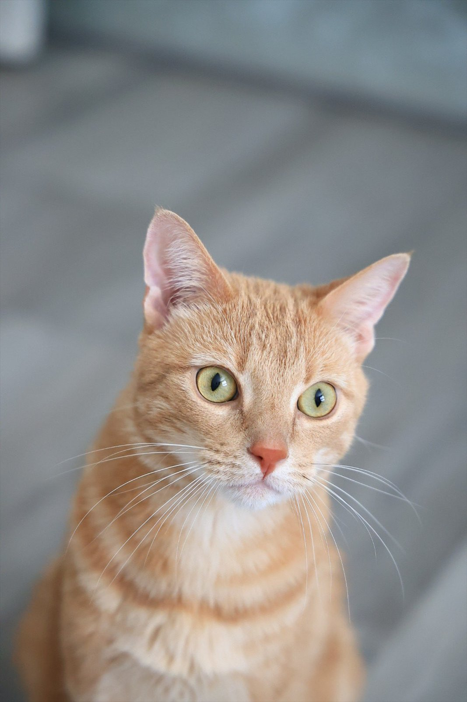
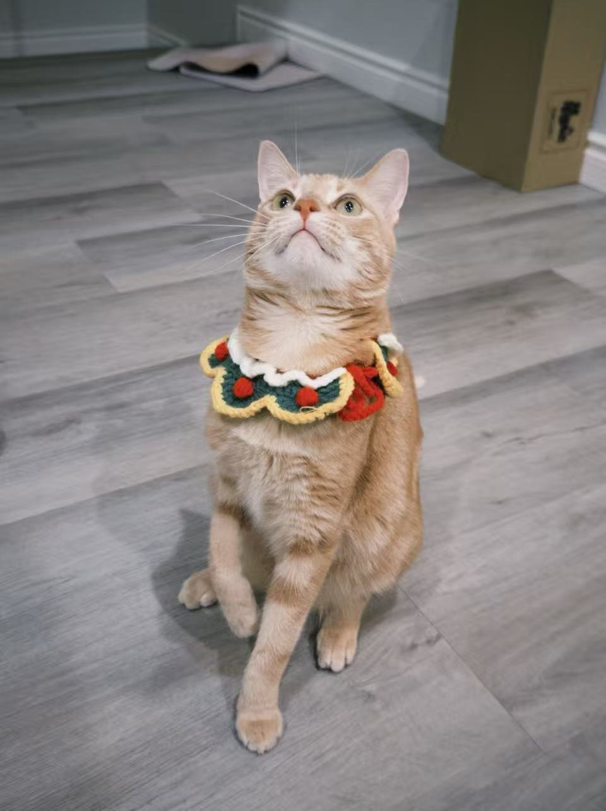
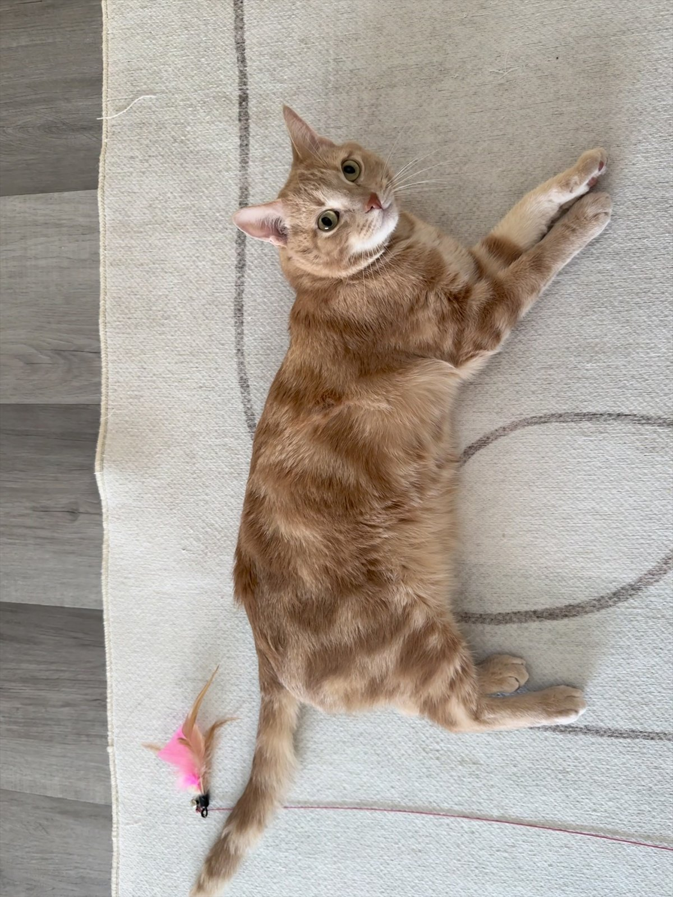
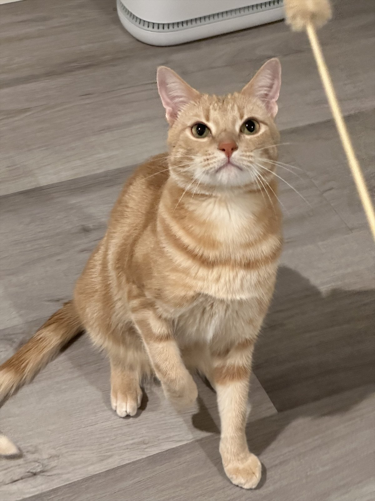
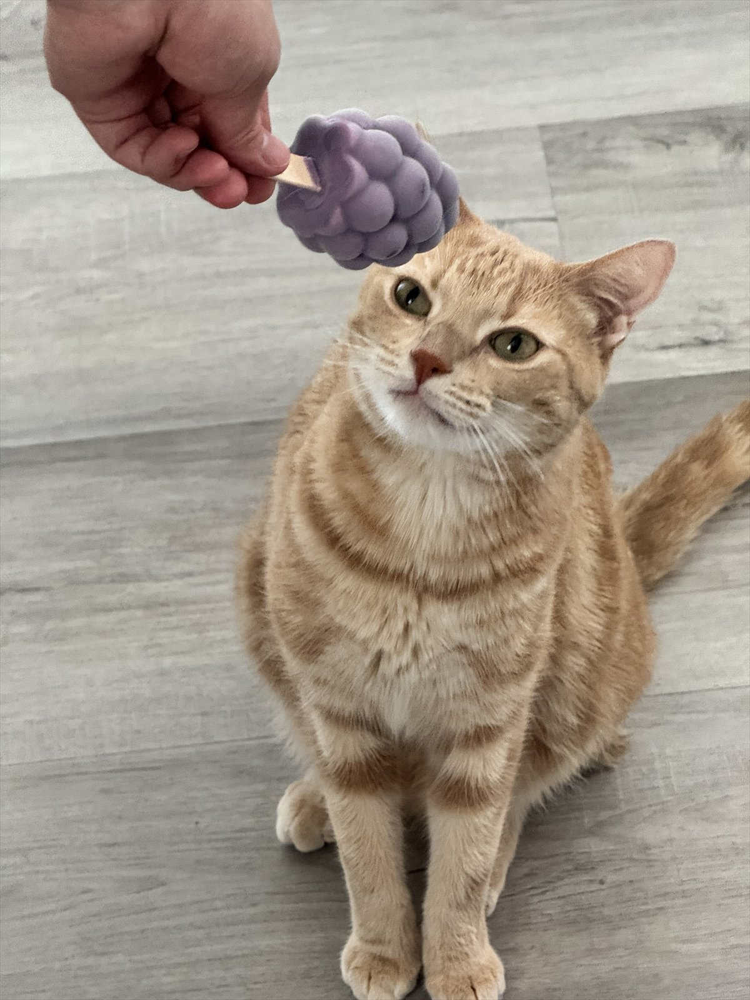
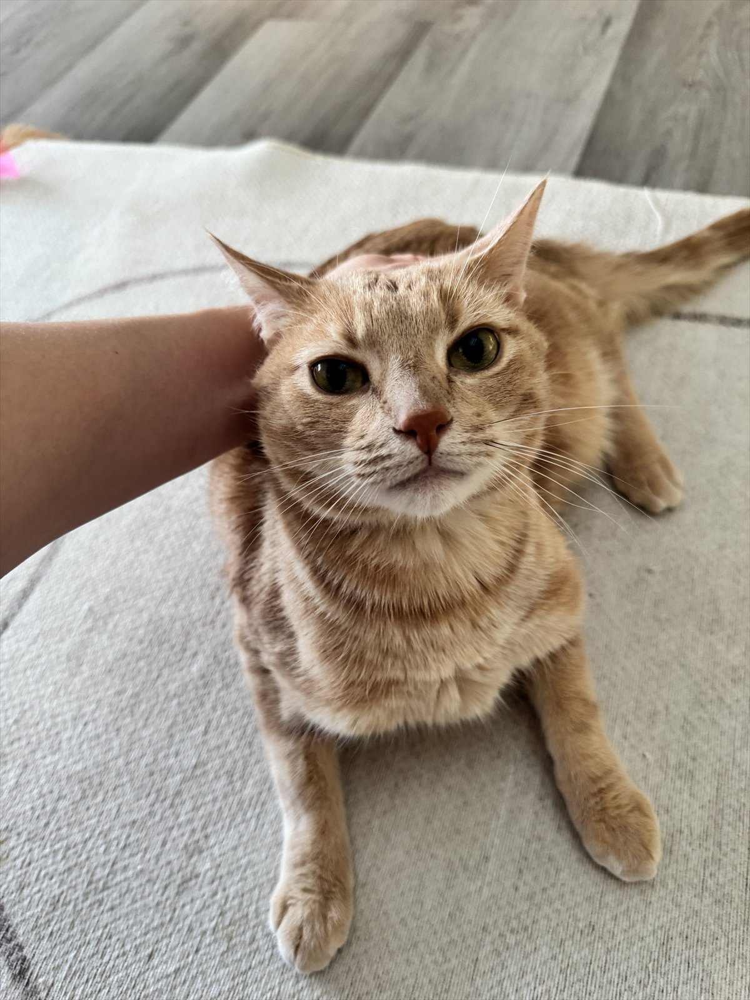
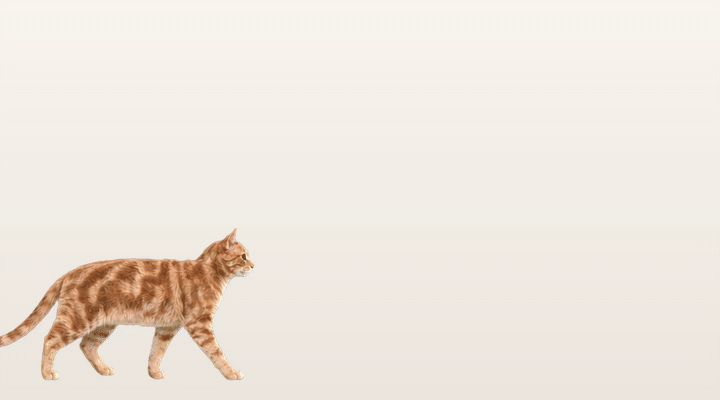

A quiet life with
Life with Bambi
Bambi is my orange tabby, desk supervisor, and the real-world inspiration behind my desktop companion project.
Bambi says: keep the treats nearby.

Small scenes from home





The next small step
From desk supervisor to desktop companion
The cat who watches me code became the reference for a small Windows companion built to bring a little of his presence to the desktop.
See the project